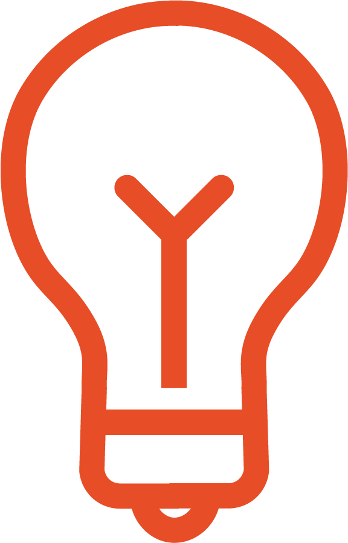
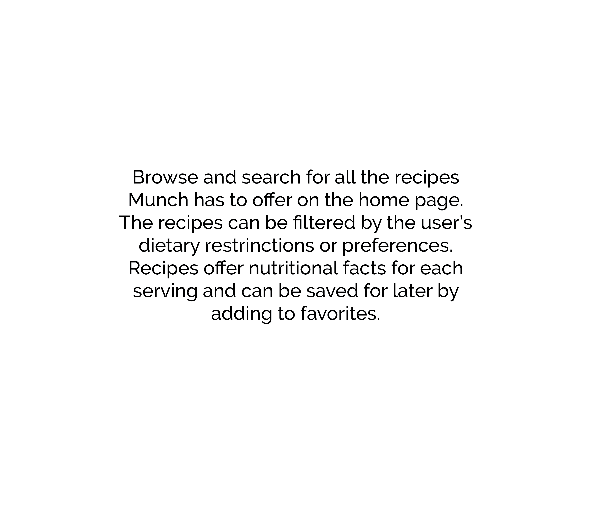
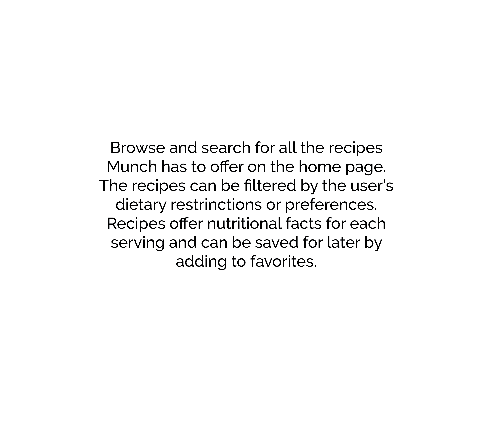

Munch is a mobile application that allows users to find recipes based on their dietary restrictions and ingredients they already have available.
learn more

Munch focuses on enhancing the recreation of cooking by allowing users to monitor and keep track of the ingredients they have in their kitchen and create meals specifically catered to their dietary needs.
This application is targeted towards busy college students, but can extend to working professionals or individuals that are short on time, want to work on their cooking skills, or have access to recipes that meet their dietary restrictions.
Munch offers a solution of personalized recipes and tracking the shelf life of ingredients to improve users' quality of life.
This project was made in collaboration with Dana Chung and Ruby Tazim.
NEEDFINDING
After
observing college students and working professionals as they make a meal, we noted what issues or challenges
they have along the way.
INTERVIEWEE 1
Taherah is a full-time college student that works part-time and is involved in a student organization. Her meal preference is based
on what she's craving, health, and what ingredients she has on hand. She searches for healthy recipes online and checks if she has all
the necessary ingredients. If she doesn't have the correct ingredients than she searches for another recipe. If she unsuccessfully finds
a recipe then she will choose not ot eat or have something instant.
INTERVIEWEE 2
Adrian is working professional that cooks twice a week, one for meal prepping and another if he runs out of meals to eat. He chooses what to cook based
on what he has available in his fridge and priotizes the ingredients that are almost expiring. Adrian usually forgets what he has in his fridge so he makes
sure to check for anything that has gone bad.
INTERVIEWEE 3
Miraya is a full-time college student with a busy schedule. Miraya usually prepares quick and healthy meals with the same ingredients everyday to keep in simple.
When Miraya doesn't have time to cook she usually skips meals or resorts to what snacks she has available.
USER NEEDS
1. Needs a way to quickly know what meal to cook
2. Needs to avoid unhealthy meals or snacks if they can't figure out what to eat
3. Needs to track the ingredients they have available as well as their expiration date
After observing these challenges, we focused on making cooking meals more efficient and easier by having
ingredient information as well as recipes that meet their preferences more accessible.
INTERVIEWEE 1
INTERVIEWEE 2
INTERVIEWEE 3
USER NEEDS
DEVELOPMENT
After creating a paper prototype and receiving feedback on our functionality we narrowed
down our design to include four main screens that each contributed to a simple yet effective cooking app.
MOBILE APPLICATION
Check out the prototype here
RECIPES
 
